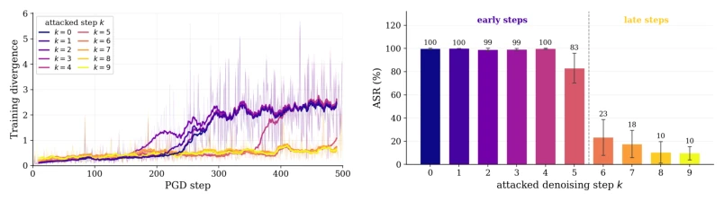
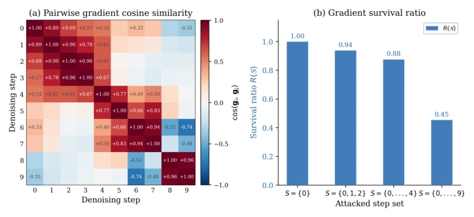
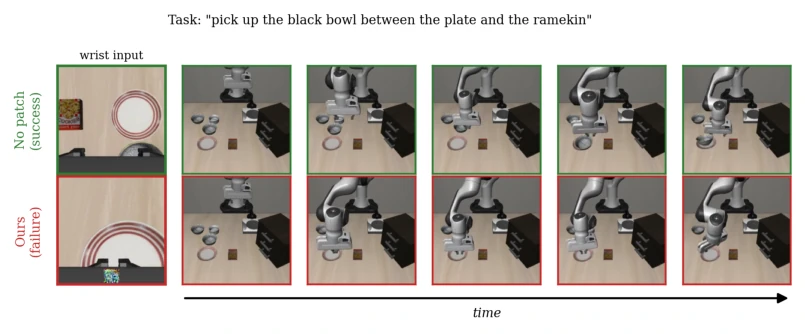
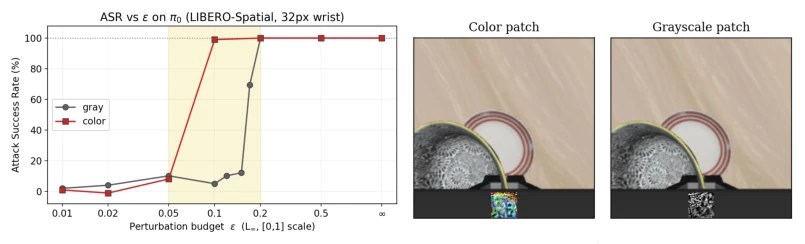
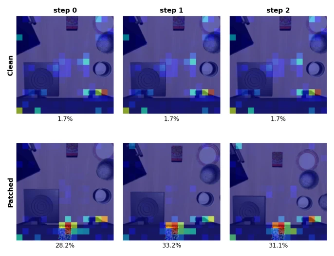
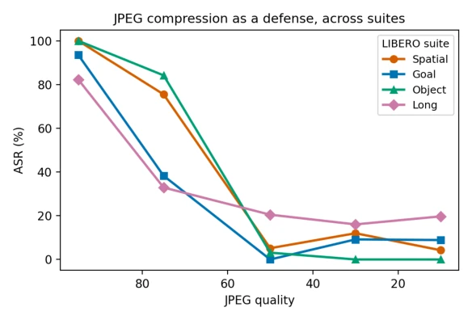

This paper casts a cold shower on the "robustness" of Flow-Matching VLA. The authors found that the π0 series models appear perturbation-resistant, but this is actually because previous attacks missed the mark—ignoring the ODE structure of the denoising trajectory. DRIFT can render the robot "blind" with a simple sticker, even proposing the counterintuitive conclusion of "less is more": attacking only the first step is more effective than attacking multiple steps. This finding is quite interesting, yet it also exposes loopholes in current VLA safety evaluation. However, white-box optimized stickers are somewhat idealized in actual black-box deployment, and since the sticker position is fixed on the wrist camera, changing the viewpoint might render it ineffective. Overall, it is an elegant attack, but do not expect it to immediately withstand all physical attacks; after all, if the robot changes the camera angle, the sticker might be applied in vain.
研究动机Motivation
现有研究认为 Flow-Matching VLA（如 π0）比自回归模型更抗扰动，但这可能是假象。之前的攻击方法要么针对最终动作空间（UADA Wang et al. (2025)），要么针对视觉嵌入（EDPA Xu et al. (2025a)），都忽略了去噪 ODE 这一核心生成机制。虽然 FlowHijack An et al. (2026) 指出了去噪轨迹的脆弱性，但它依赖训练时后门，需要修改模型权重，不适用于部署后的冻结策略。本文旨在填补这一空白：在测试时，仅通过物理贴纸攻击冻结的 Flow-Matching VLA，揭示其真正的脆弱性，并验证去噪轨迹是否可作为有效的攻击面，为实际部署提供安全警示。
Existing research posits that Flow-Matching VLA (such as π0) is more perturbation-resistant than autoregressive models, but this may be an illusion. Previous attack methods either targeted the final action space (UADA Wang et al. (2025)) or visual embeddings (EDPA Xu et al. (2025a)), all neglecting the core generative mechanism of denoising ODE. Although FlowHijack An et al. (2026) pointed out the vulnerability of the denoising trajectory, it relies on training-time backdoors and requires modification of model weights, making it inapplicable to frozen policies post-deployment. This paper aims to fill this gap: at test time, attack frozen Flow-Matching VLA solely via physical stickers, reveal its true vulnerabilities, and verify whether the denoising trajectory can serve as an effective attack surface, providing safety warnings for practical deployment.

Figure 2: Single-step vulnerability by denoising step k. (a) Training velocity divergence with respect to the step of patch optimization using projected gradient descent (PGD) when only step k is attacked (color: early →late); the earliest steps reach the highest divergence. (b) Corresponding ASR on π0 (bars: mean over four LIBERO Liu et al. (2023) suites; whiskers: ±std, single seed): early steps (k ≤5) break essentially all tasks, late steps (k ≥6) collapse. Both agree on an early/late boundary near k=5.
The core of DRIFT is optimizing a universal adversarial sticker pasted on the robot arm within the wrist camera's field of view. The overall process is divided into offline optimization and online deployment: the offline stage utilizes white-box gradient information to optimize the sticker targeting the denoising velocity field; the online stage pastes the sticker onto the input image, and the frozen policy infers directly. The innovation lies in the selection of attack steps: while traditional intuition suggests attacking more denoising steps is more effective, the authors found attacking the first step (k=0) yields the best results. This is because during multi-step optimization, gradient direction conflicts (gradient conflict) across different steps lead to signal cancellation. DRIFT only optimizes the velocity divergence at k=0, avoiding conflicts, while leveraging the cascade effect of the ODE solver to amplify errors. Optimization employs PGD, with the objective function being the L2 norm of velocity field differences, ensuring maximum attack efficiency.

Figure 3: Gradient conflict. Left: pairwise cosine similarity between the per-step patch gradients gk = ∂∥vθ(Aτ(k), o+) −vθ(Aτ(k), o)∥2 2/∂δ; the first-step gradient is anti-aligned with the late- step ones (e.g., cos(g0, g9)≈−0.35). Right: for a first-M window we report the survival ratio R(S) = ∥P k∈S gk∥/ P k∈S ∥gk∥(R=1 when all step gradients align, R→0 under complete cancellation). R falls as the window widens (1.00→0.45 from M=1 to M=10)—the gradients increasingly cancel—mirroring the measured drop in ASR, so concentrating the attack on the first step alone is strongest.
Experiments were conducted on four suites of the LIBERO benchmark (Spatial, Goal, Object, Long), attacking π0 and π0.5 models. Metrics include Task Success Rate (TSR), Attack Success Rate (ASR), and Action Difference (NAD). Baselines include random stickers, UADA, and EDPA. Results show that DRIFT achieved nearly 100% ASR on π0, far exceeding UADA (13.2%) and EDPA (25.3%). Ablation studies indicate that attacking the first step is more effective than attacking the first 3 or 5 steps. Additionally, the attack demonstrates cross-task generalization and is also effective on π0.5 (requiring a larger sticker). Failure mode analysis reveals the robot exhibits "phantom grasp", i.e., closing the gripper without approaching the object, proving the effectiveness of the attack.

Figure 4: Qualitative result on π0. Leftmost: the only difference between the rollouts—the wrist input, with our 32 px patch at the bottom-center over the gripper; remaining columns: the third- person view over time (left →right). Without the patch (top, green) the policy completes the task; with it (bottom, red) the same frozen policy is driven off course and fails.

Figure 6: Perturbation budget and stealthiness (a) Attack success vs. ℓ∞budget ϵ: both color and grayscale patches show sharp phase transitions rather than gradual trade-off; using the color patches (red) saturates at roughly half the budget of the grayscale patch (gray) (b) Our attack does not need to be visually salient: applied to the same wrist view, the default patch (left) is conspicuous against the gripper, whereas a grayscale-constrained patch (right) blends into the dark gripper region—the perturbation can be realized far more inconspicuously.

Figure 7: The patch absorbs a disproportionate share of the object-referring token’s attention. “bowl” token attention onto the wrist image at three early steps. Top row (Clean): the unpatched rollout of the same task, which succeeds. Bottom row (Patched): the DRIFT-patched rollout, which fails. The percentage beneath each panel is the fraction of the “bowl” token’s attention falling inside the 32×32 patch region (chance level 3.5%). Without the patch this region stays below chance (1.7%); once patched, 28–33% of the attention concentrates there.

Figure 8: JPEG compression as a defense, across LIBERO suites. ASR vs. JPEG quality. ASR falls off progressively as Q decreases; once compression is strong enough (roughly Q ≲50–60) the attack is largely blocked on Spatial, Goal, and Object (near-zero ASR). The Long suite is an exception, plateauing at a markedly higher ASR (16–21%) even under the strongest compression tested.